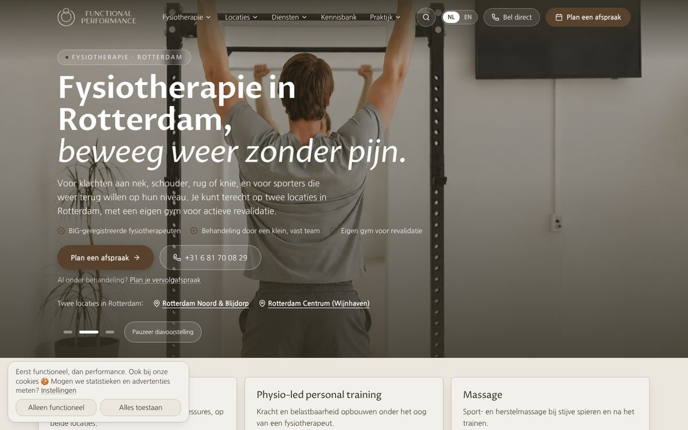
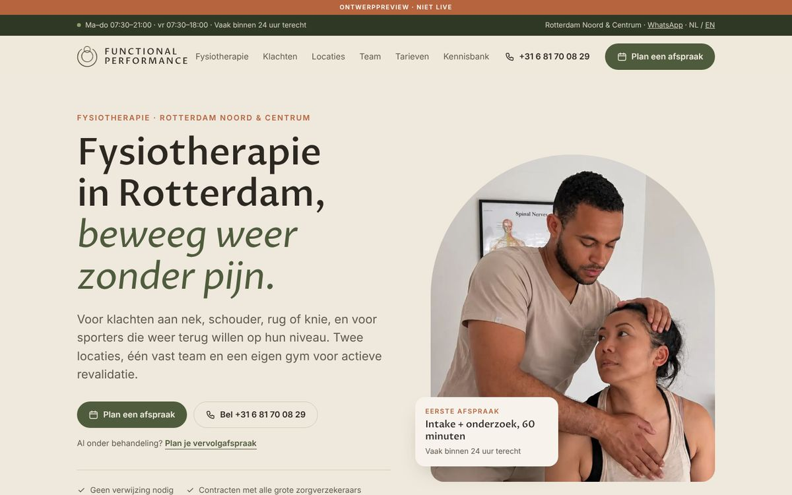
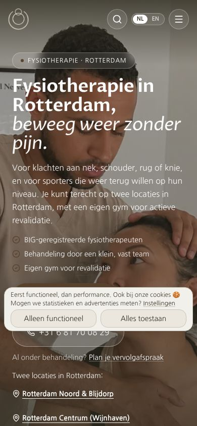
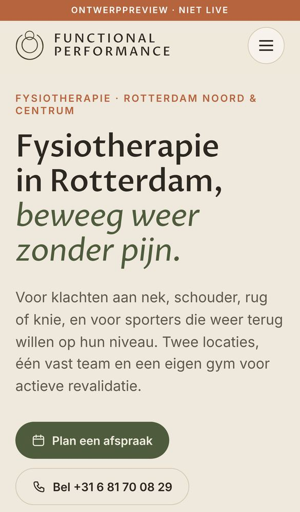
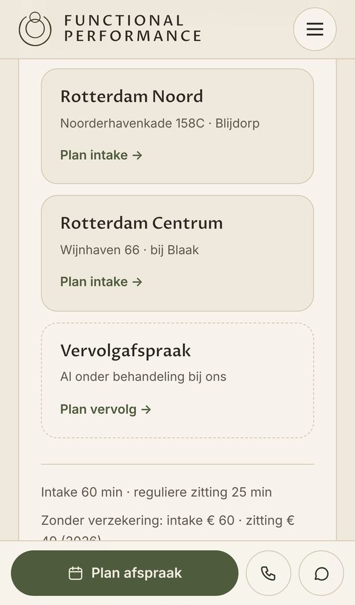
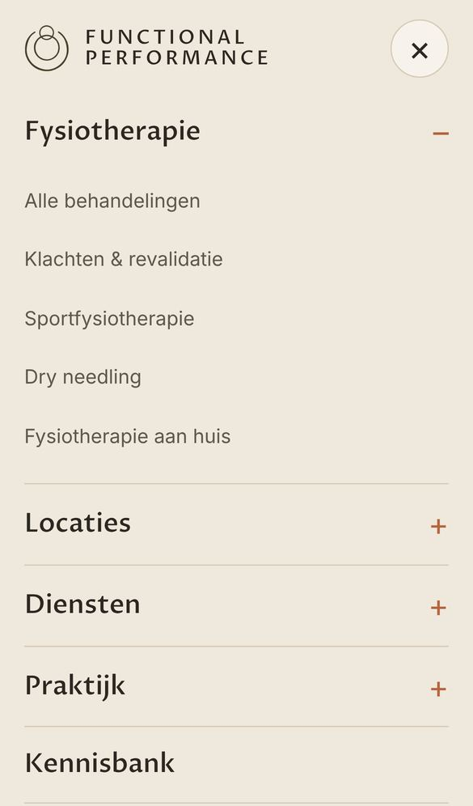

Functional Performance · Herontwerp homepage
Analyse van functionalperformance.nl op desktop (1440px) en mobiel (iPhone 13), een verbeterplan met prioriteiten en een klikbare preview. Er is niets aan de live website veranderd.
1 · Analyse
Label, kop, alinea, drie vinkjes, twee knoppen, een vervolglink, twee locatielinks en een slider met pauzeknop op een donkere foto. De kop is sterk, maar wordt omringd door ruis.
Op mobiel valt de cookiebanner precies over de knop “Plan een afspraak”.
Klachten komen drie keer terug in kaarten (4 + 7 + 9). Een tekst-ticker herhaalt de USP's twee keer achter elkaar. Locaties staan in twee aparte secties.
Bezoekers moeten ver scrollen voor team, reviews en contact.
Bijna elk blok heeft dezelfde rand, schaduw en ronding. Daardoor valt niets op en voelt de pagina eerder als een template dan als een boutique praktijk.
20+ kaarten met dezelfde stijl op de homepage.
Het beige past bij het merk, maar de bruine knoppen en donkere banden maken het zwaar. Olijfgroen en terracotta ontbreken nog.
Het label “Eerste stap” in de slot-CTA is bijna onleesbaar (te weinig contrast).
Sterke eigen foto's (behandeling, gym, wachtruimte) staan onder een donkere overlay of in een slider. Teamfoto's hebben verschillende achtergronden en de naam staat over de foto heen.
In de statistiekenrij vallen de sterren buiten hun vak (vier van de vijf zichtbaar).
Er is geen vaste afspraakknop tijdens het scrollen. De locatiekeuze voor de intake staat diep in de pagina. Het mobiele menu heeft geen boekknop of openingstijden.
Kansen: vaste actiebalk, locatiekeuze direct onder de hero.
2 · Verbeterplan
| Prioriteit | Verbetering | Waarom | Inspanning |
|---|---|---|---|
| P1 | Rustige split-heroKop links op zand, foto rechts in boogvorm; één primaire knop, bellen als tweede. Slider weg. | Directe focus op de afspraak, snellere laadtijd (één foto in plaats van drie). | Klein |
| P1 | Boekmodule onder de heroKies Noord, Centrum of vervolgafspraak, met de bestaande Flux-links. Duur en tarieven direct zichtbaar. | Minder twijfel voor het boeken, meer online intakes. | Klein |
| P1 | Mobiele actiebalk + nieuw menuVaste balk met “Plan afspraak”, bellen en WhatsApp. Menu op volledig scherm met grote tikvlakken, boekknop en openingstijden. | De boekknop is altijd binnen bereik van de duim. | Klein |
| P1 | Cookiebanner compacterSmalle balk onderaan die de hero-knoppen niet bedekt. | Nu blokkeert de banner de belangrijkste knop op mobiel. | Klein |
| P2 | Drie klachtenlijsten samenvoegenEén lijst van 8 klachten die elk naar de bestaande URL linkt. De SEO-introtekst met interne links blijft staan. | Pagina op mobiel ongeveer 30% korter, zelfde interne links. | Middel |
| P2 | Locaties en openingstijden in één sectiePer locatie: adres, openingstijden, “Plan hier”, route. Ook in de footer en de bovenbalk. | Openingstijden nu nergens zichtbaar; dit is lokale SEO en vertrouwen. | Klein |
| P2 | Nieuw kleurenpalet en typografieZandbeige als basis, olijfgroen voor knoppen en donkere banden, terracotta alleen voor kleine accenten. Proza Libre blijft voor koppen; Inter voor leesbare tekst. | Warmer en luxer, en het merk blijft herkenbaar. | Middel |
| P2 | Minder kaarten, meer witruimteLijsten met lijnen in plaats van kaarten, ticker en statistiekenrij weg, “Zo werken we” in drie echte stappen. | Duidelijke hiërarchie en een rustiger beeld. | Middel |
| P3 | Fotografie consistent makenTeamfoto's op dezelfde zandkleurige achtergrond, namen onder de foto, praktijkfoto's zonder donkere overlay. | Persoonlijk en premium, zonder nieuwe fotoshoot nodig. | Klein |
| P3 | Reviews als één groot citaatEén echte review groot weergegeven, met links naar Google en ZorgkaartNederland in plaats van een carrousel. | Rustiger en geloofwaardiger. | Klein |
| P3 | Zelfde systeem op subpagina'sKlacht-, locatie- en dienstpagina's in dezelfde stijl, met de boekmodule per locatie. | Eén consistente ervaring door de hele site. | Groot |
Randvoorwaarden
3 · Visuele preview






De preview is een losse HTML-pagina met jullie eigen foto's en teksten. Alle links gaan naar de echte pagina's en Flux-boekingen. Open hem ook op je telefoon voor de actiebalk en het menu. Bekijk alleen de homepage; de subpagina's zijn nog niet herontworpen.
Volgende stap